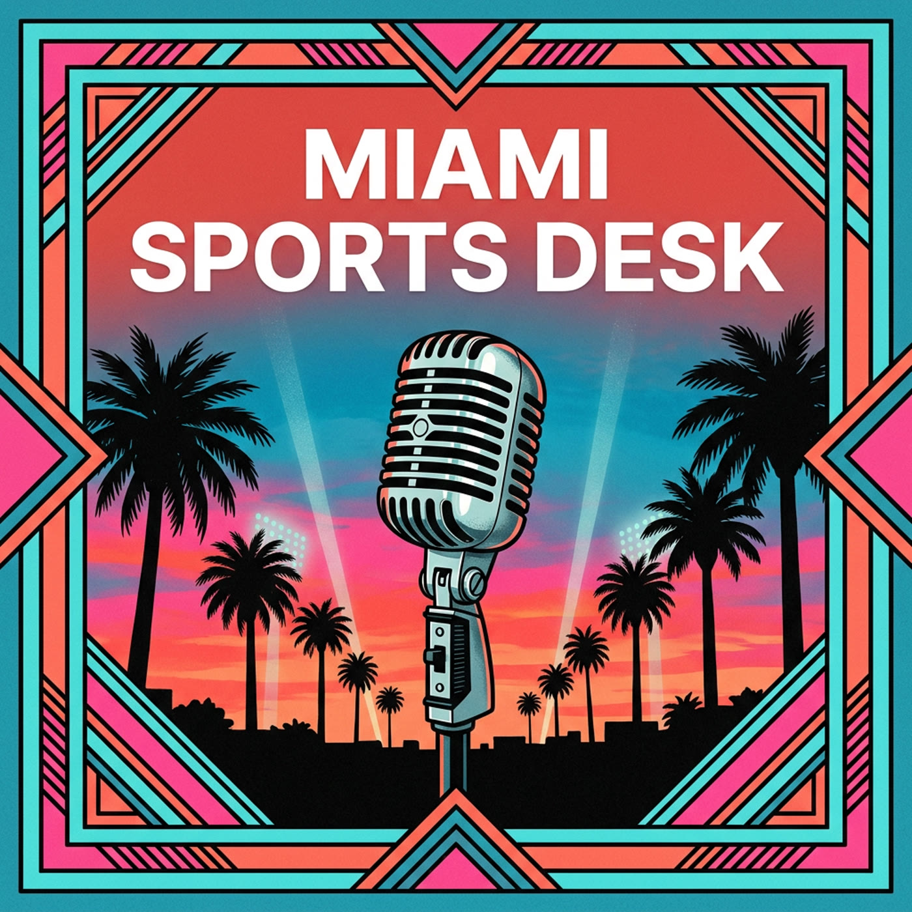

01
Apple Podcasts
Follow a Show by URL
Open the Library tab, tap the ••• menu at top right, choose “Follow a Show by URL”, and paste the feed URL.

Daily Miami sports podcast
A morning roundup at 7 every day, plus a pregame drop about 30 minutes before each game, built from the reporters and insiders who cover Miami’s teams.
About the show
Every morning: last night’s results, today’s slate with times and TV, then team by team, with a short fan pulse to close.
Before each game: lineups, injuries, the probable starter or goalie, and the late reporting from the last few hours.
Mostly the people on the beat, credited by name.
About two-thirds reporters, insiders and podcasts, a fifth official team news, and a tenth fan mood, labeled as such.
Miami Herald, Sun Sentinel, Palm Beach Post, The Athletic, Florida Hockey Now, Locked On, WQAM (Hochman, Crowder & Solana; Tobin & Leroy), Andy Slater, Will Manso, Joe Rose, Greg Cote, team sites, and a 97-reporter X list.
How to subscribe
01
Apple Podcasts
Open the Library tab, tap the ••• menu at top right, choose “Follow a Show by URL”, and paste the feed URL.
02
Overcast, Pocket Casts, Castro and most others
Find Add podcast or “Add URL”, then paste the feed URL.
03
Spotify
Spotify does not accept private RSS feeds. Use another app.
Episodes
The full, always-current episode list lives in the podcast feed.